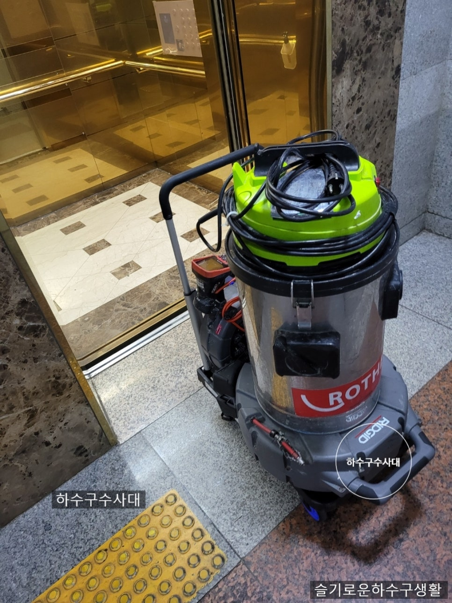
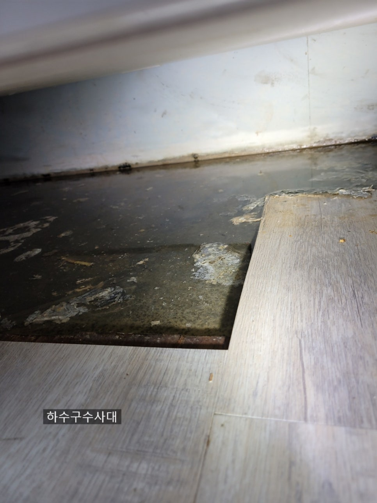
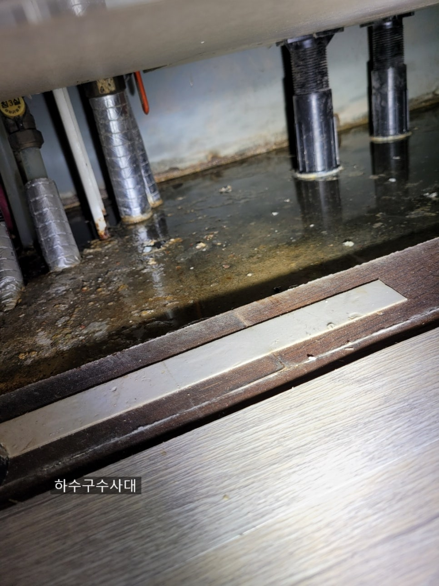
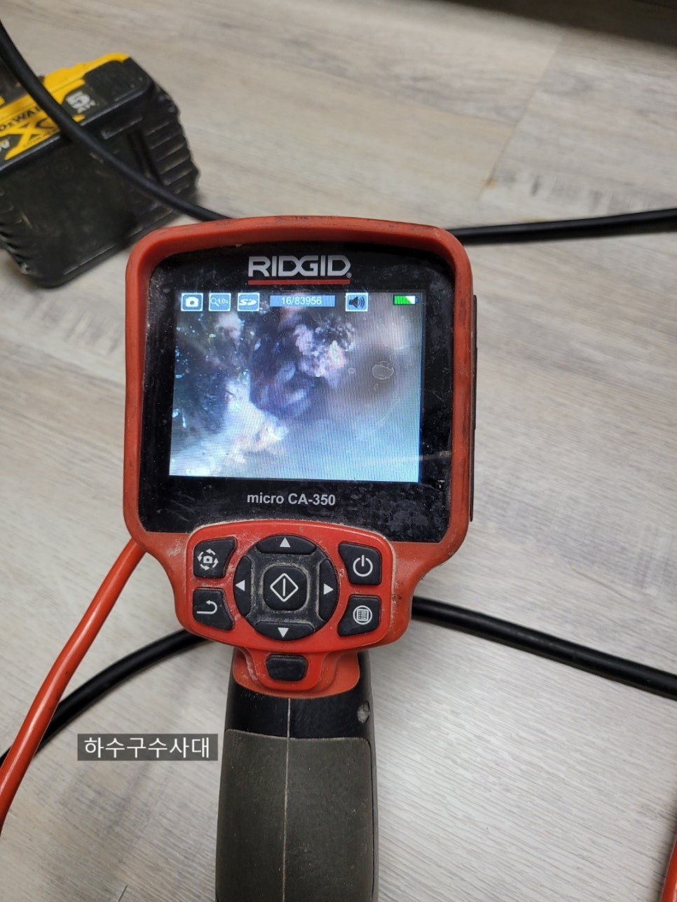
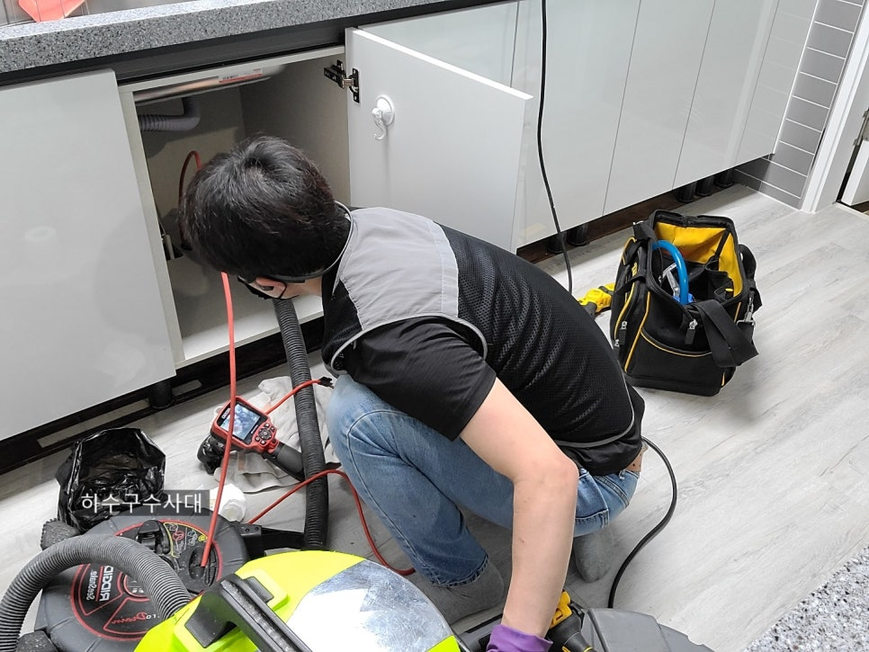
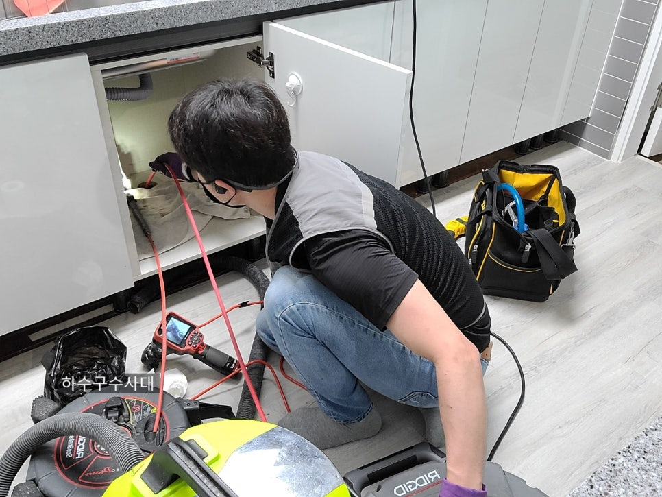
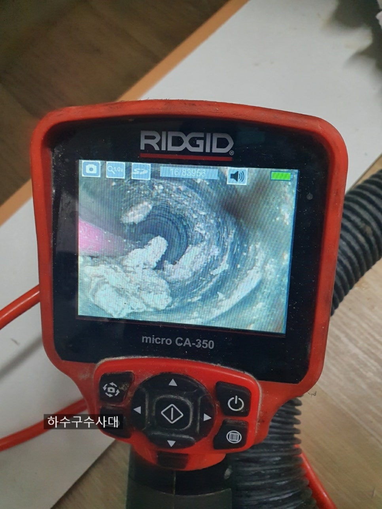

🏠 평택싱크대막힘 싱크대역류 원인해결
평택 싱크대막힘 전문 시공 후기

📋 작업 개요
- 위치: 평택
- 서비스 유형: 싱크대막힘, 하수구막힘, 배관막힘, 역류해결, 뚫는업체, 고압세척, 설비공사
- 작업 일시: 2021. 6. 8. 0:18
- 업체명: 하수구수사대 (010-5615-2118)
🔍 문제 상황
안녕하세요.
하수구수사대 이팀장입니다.
조금만 움직여도 몸에서 땀이 날정도로
날이 더워졌습니다.
올 여름도 유난히 더울거 같은데
이웃 여러분 몸관리 잘하시길 바랍니다.^^
오늘은 평택싱크대막힘 현장을
다녀왔는데 여러분도 이런 생길수도
있으니 참고 하시면 좋을거 같습니다.
싱크대역류
우선 도착해 싱크대 하부장을 보니
엄청난 물이역류되어 있는 상황입니다.
듣자하니 성인된 딸들만 사는 아파트를
구입후 리모델링을 하고 이사를
들어왔다고 합니다.
원래는 마루바닥이였지만 리모델링을
하면서 위에 데코타일을 덧붙여
공사를 진행 했더라구요.
많은 양의 싱크대물이 배관에서 역류하여
싱크대하부장으로 흘러나왔습니다.
마루바닥의 높이와 덧붙인 테코타일
때문에 모르고 있다가
많은양이 물이 역류하니 며3일전부터
데코타일
틈으로 물이 올라왔다고 하네요.
내시경검수
평택싱크대막힘 싱크대역류 된 물을
어느정도 정리후 내시경으로

🔎 원인 분석
💡 전문가 진단: 정밀 진단 장비를 사용하여 슬러지의 고착 여부를 판명하고 타격/세척 작업을 실시했습니다.
배관상태를 파악해 봅니다.
입구쪽부터 배관구멍이 보이지 않을정도로
슬러지가 많네요.
리모델링을 하면 대부분
보이는곳만 리모델링을 하는데
싱크대를 아무리 비싸고 이쁜걸하든
욕실을 삐까뻔쩍 멋있게 변화를 주었어도
하수배관을 신경쓰지않아 막히면
큰 낭패를 볼수 있습니다.
간혹 오래된 아파트 싱크대는
주철관으로 되어있는 곳이 있는데요
주철관은 오래되면 부식되기 때문에
부식된곳을 살짝만 충격이 가해지면
배관이 구멍이 나는 경우가 종종 있습니다.
더군다나 리모델링을 한후에
일이 터지면 싱크대를 다시 다 뜯어내는
상황이 벌어집니다.ㅜㅜ
리모델링하기전에 꼭 배관점검
해보시길 권해드립니다^^
배관세척작업
평택싱크대막힘 싱크대역류 해결을 위해
배관을 세척할수 있는 장비를
투입하였습니다.
꽉~막혀있는 상황이라 뚫고
석션작업을 반복해 줍니다.
배관세척중
배관에 딱딱한 슬러지들이
많이 떨어져 나오고 있습니다.

🔧 작업 과정
슬러지들이 배관 벽면에 붙어있다가
일부분이 떨어지면 막힘 증상이 발생됩니다.
평택싱크대막힘 싱크대역류 현장
배관구조가 2번 꺽여 나가는 구조라
물이 잘 빠지지 않는 구조입니다.
아무래도 물이 고여있으면 물위에
기름이 떠있다가 배관벽면에
붙게됩니다.
더 딱딱하게 붙기전에 꾸준한
관리가 필요한데 대부분 이 관리를
못하고 계신거 같습니다.
돌슬러지
딱딱한 돌슬러지들이 배관을 막고
있습니다. 딱딱한 돌슬러지의
경우 덩어리가 떨어져 나오기 때문에
쉽게 빼내기가 어렵습니다.
슬러지와 싸움
내시경을 보면서 슬러지들을
잘게 부수는 작업을 합니다.
잘게 부숴진 슬러지는 석션으로
다 빼내 주는것이 좋습니다.
막힘증상이 심해 질수 있기 때문이죠.
평택싱크대막힘 평택싱크대역류 현장처럼
믈이 하부장에서 새어 나온다면
하루빨리 점검을 받아 보시길 바랍니다.
간혹 싱크대물이 역류하여
밑에집에 물이 떨어져 보상금액이
100만원 이상 들기도 한답니다.
특히 싱크대처럼 음식물기름이
내려가는 배관에는 슬러지가 붙어있을
확률이 많아지기때문에
되도록 내시경을 보유하고 있는
업체를 택하시길 바랍니다.
작업후사진
완벽하게 돌슬러지들이
제거되었네요^^
고객분들도 화면을 보시고
이제 안심이 된다면서 앞으로는
관리를 철저히 하시겠다고 합니다.
관리라는게 특별한건 없습니다.
설거지를 하면서 물을 충분히 내려보내
주시고 한달에 한번 뚜러펑으로
배관에 부어주시고 10분뒤
물을 5분이상 틀어주시면 배관에


✅ 작업 완료
조금 붙어있는 슬러지들을
배출해 주는게 다입니다^^
물이 시원하게 내려가네요^^
뻥~~뚫리 배관에 물을
받아서 내리면 소리가 틀립니다.
꼬르륵~~배관이 비었다는 신호죠.
평택싱크대막힘 싱크대역류 완벽해결!!
이웃여러분들도 싱크대 막히지 않게
관리하시길 바랍니다^^
하수구수사대
서울/경기/인천
010-2340-2118




⚠️ 주방 싱크대 배관 막힘 예방 수칙
- ✅ 기름기가 묻은 식기나 프라이팬은 설거지 전 키친타올로 반드시 기름때를 닦아내세요.
- ✅ 주기적으로 싱크대 개수대에 뜨거운 물을 가득 받아 한 번에 내려 배관 내부 기름을 씻어내세요.
- ✅ 배수구 거름망을 미세한 필터로 사용하시고 음식물 찌꺼기가 틈으로 새어 들지 않게 관리하세요.
- ✅ 베이킹소다와 식초를 뜨거운 물과 함께 일주일에 한 번씩 부어주면 배관 살균과 막힘 예방에 좋습니다.
💡 핵심 정리
- 확실한 장비 작업(내시경 점검 및 샤프트 스케일링)으로 원인을 뿌리 뽑습니다.
- 작업 후 1년 이내에 동일한 부위 재발 시 100% 무상 A/S 서비스를 보장합니다.
- 서울 · 경기 · 인천 전 지역에 24시간 언제든 긴급 출동할 수 있도록 항시 대기 중입니다.
❓ 자주 묻는 질문 (FAQ)
🚨 평택 싱크대막힘 문제로 고민이신가요?
정확한 원인 진단과 확실한 시공으로 재발 없는 해결을 약속드립니다.
24시간 긴급 출동 | 서울 · 경기 · 인천 전지역 | 1년 내 재발 시 무상 A/S